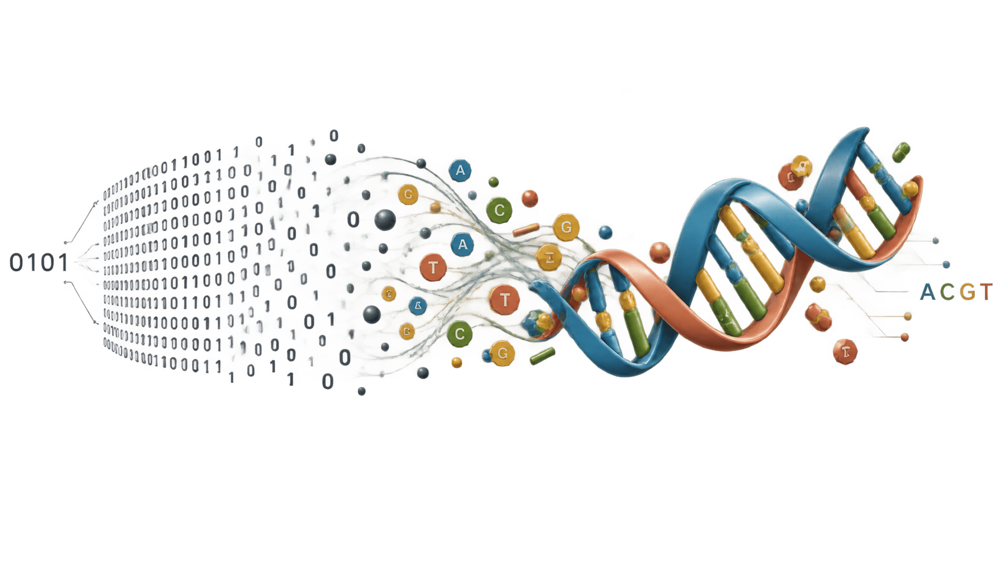
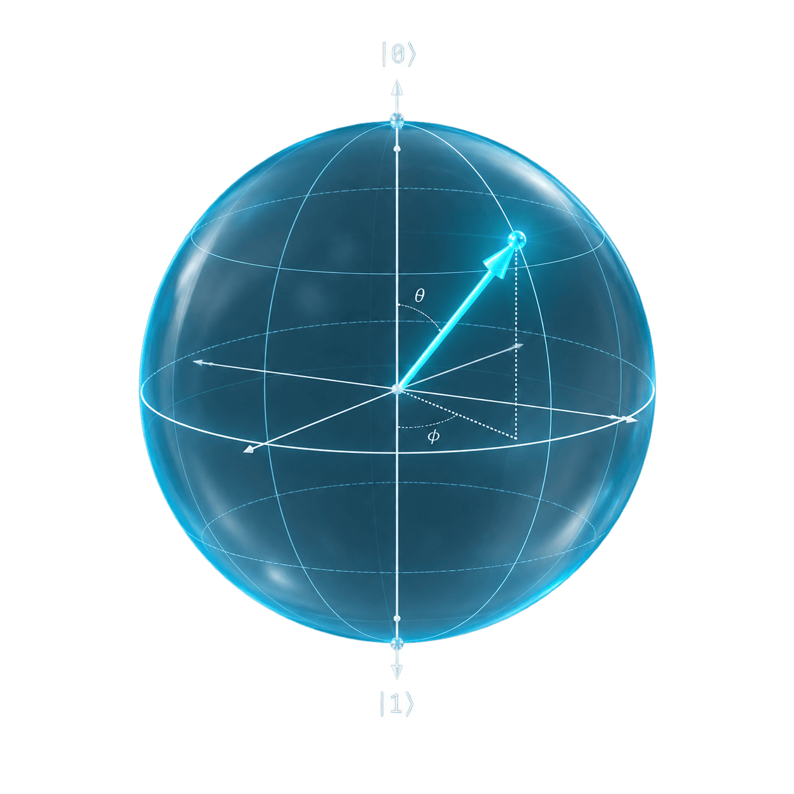
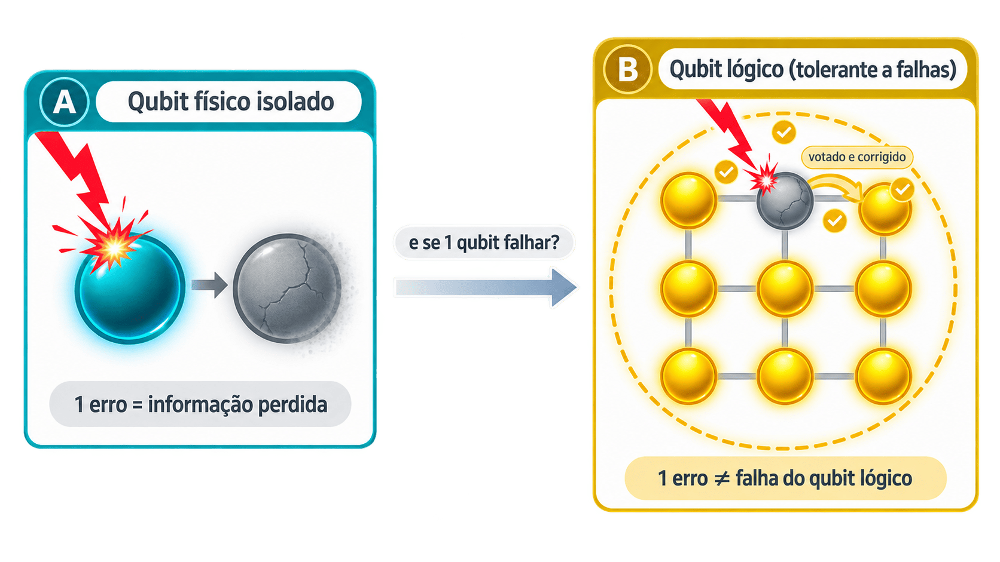
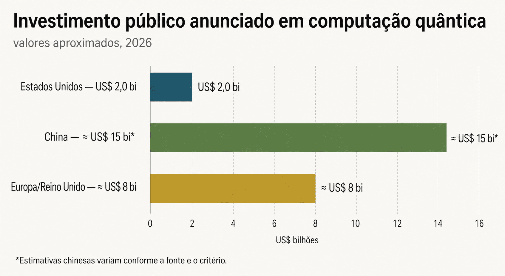
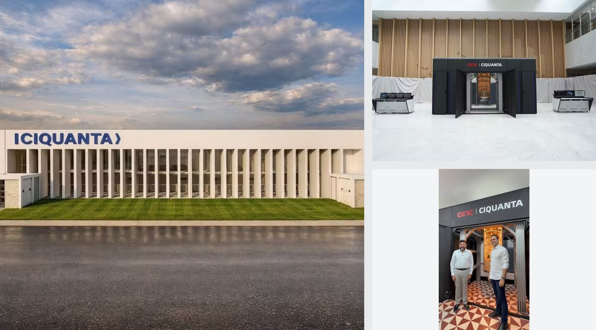
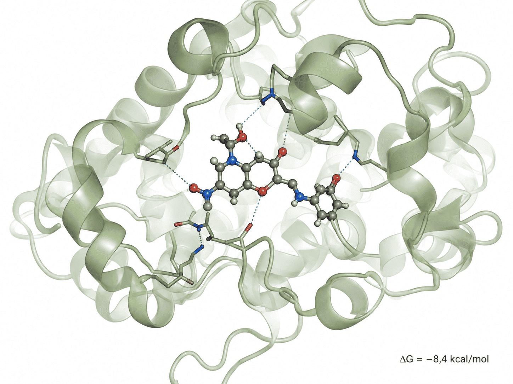

A maratona em que ninguém está olhando para o corredor certo
Em março de 2026, na Maratona de Los Angeles, um professor substituto de 36 anos ultrapassou o líder da prova nos últimos metros — a diferença final foi de 0,01 segundo.1 A cena virou metáfora para o momento tecnológico atual: toda a atenção está na IA, mas outros "corredores" avançam por fora do radar — e podem, com um sprint final, mudar tudo antes dela.
Dois desses corredores aceleraram muito em 2026: o armazenamento de dados em DNA e a computação quântica. Ambos nasceram como hipóteses teóricas décadas atrás (1964 e anos 1980, respectivamente) e hoje já concentram apostas bilionárias de mercado.1
img/maratona-metafora.jpg
Foto de linha de chegada de maratona, dois corredores emparelhados no instante da ultrapassagem, ângulo frontal baixo, luz natural de fim de manhã.
Um grama de DNA guarda o equivalente a toda a internet audiovisual do mundo
A ideia é de 1964 (o físico russo Mikhail Neiman) e o primeiro experimento real veio só em 1987, quando Joe Davis codificou uma runa dentro do DNA de uma bactéria.1 Hoje isso é indústria de verdade.

img/dna-armazenamento-dados.png
Diagrama esquemático mostrando um arquivo digital binário (0s e 1s) sendo convertido em uma fita de dupla hélice de DNA com as quatro bases (A, C, G, T) coloridas, estilo infográfico limpo, fundo transparente.
Em 2026 o campo saiu do laboratório para o mercado: a Atlas Data Storage fechou parceria com a fabricante de chips belga imec para escalar a produção em silício2 e foi convidada a apresentar sua tecnologia no simpósio da TSMC.4 Já a francesa Biomemory comprou os ativos da histórica Catalog Technologies e promete lançar a primeira solução comercial de armazenamento em DNA para data centers ainda no segundo semestre de 2026.3
Por que importa: uma vez "escrito", o DNA não consome eletricidade para se manter estável — ao contrário de HDs e fitas magnéticas, que precisam de energia e migração periódica de dados.1
Da teoria de Feynman ao maior IPO da história do setor
Proposta como possibilidade teórica por Richard Feynman nos anos 1980, a computação quântica usa qubits — que, graças à superposição, podem representar múltiplos estados ao mesmo tempo, e podem se entrelaçar entre si, permitindo processar certos problemas em paralelo.1
Isso a torna especialmente promissora para simular moléculas e materiais — inclusive proteínas e fármacos, como veremos na seção final.

img/qubit-superposicao.png
Ilustração vetorial de uma esfera de Bloch (esfera translúcida azul com eixos), representando um qubit em superposição entre os estados 0 e 1, estilo científico minimalista, fundo transparente.
Governo dos EUA investe mais de US$ 2 bilhões em participações acionárias em nove empresas de computação quântica, via duas ordens executivas.1
A Quantinuum estreia na Nasdaq com valuation entre US$ 15,7 e 17,6 bilhões — a maior oferta pública da história do setor quântico.56
Nos Estados Unidos é assinada a Ordem Executiva 14413, "Ushering in the Next Frontier of Quantum Innovation", criando um esforço nacional para computação quântica aplicada à ciência.7
O que é um computador quântico tolerante a falhas?
Qubits são extremamente sensíveis: vibração, calor residual ou até um raio cósmico corrompem sua informação — fenômeno chamado decoerência. Os computadores quânticos de hoje (chamados NISQ — "noisy intermediate-scale quantum") acumulam erro rápido demais para cálculos longos.
Um computador tolerante a falhas é capaz de detectar e corrigir esses erros automaticamente, em tempo real, durante o próprio cálculo — usando dezenas ou centenas de qubits físicos redundantes para formar um único "qubit lógico" mais robusto.
Por que ainda não existe
Exige correção de erro quântico em escala — algo tecnicamente equivalente a construir um HD perfeito sem nunca poder "olhar" diretamente o dado sem destruí-lo.
Quando chega
A IBM revisou sua estimativa interna de 2032 para 2030, e mais recentemente para 2029 — o gargalo central de toda a corrida quântica global.16

img/correcao-erro-quantico.png
Não é EUA contra China — é uma corrida em três frentes
O quadro é mais tripolar do que parece à primeira vista: cada bloco lidera em uma frente diferente.
Estados Unidos
Lidera em capital privado e maturidade de hardware (IBM, Google). Investiu US$ 2 bi em participações estatais em 9 empresas quânticas e viu a maior IPO do setor (Quantinuum).17

img/investimento-quantico-comparativo.png
Gráfico de barras horizontais comparando investimento acumulado em computação quântica em 2026 (EUA, China, Europa/Reino Unido), com valores aproximados em bilhões de dólares, paleta azul-marinho e dourado, estilo editorial limpo (sem 3D).
Um detalhe curioso: depois de fecharem seus laboratórios quânticos entre 2023-2024, Alibaba, Baidu, Tencent e Huawei voltaram a investir pesado em 2026, com rodadas de financiamento privado batendo recordes internos — ainda que em volume absoluto menor que o americano.10
Fora da escala global, mas dentro do jogo
O Brasil não compete em volume com EUA, China ou Europa — mas está construindo nichos de competência em vez de ficar de fora.
- O MCTI lançou em junho/2026 o Projeto Residência em Tecnologias Quânticas: R$ 20 milhões, 156 bolsas, ~500 profissionais formados em 6 cidades.12
- Em João Pessoa (PB), o CIQuanta vai abrigar os dois primeiros computadores quânticos operacionais da América Latina (20 e 100 qubits), em parceria com o Suzhou Quantum Center (China).13
- Desde janeiro/2026, pesquisadores do CBPF usam o computador quântico da IBM via nuvem, em parceria com a ExxonMobil, para algoritmos aplicados à indústria do petróleo.14
- Bradesco e Itaú já integram a rede global de computação quântica da IBM, segundo o presidente da IBM Brasil (jul/2026).15

img/ciquanta-paraiba.jpg
Foto de fachada ou obra do Centro Internacional de Computação Quântica da Paraíba (CIQuanta), em João Pessoa — arquitetura institucional moderna, luz de dia, se disponível; alternativa: mapa estilizado do Brasil destacando João Pessoa/PB, Campinas/SP e Campina Grande/PB.
"As pessoas contempladas por essa residência não podem se tornar meras usuárias de tecnologias desenvolvidas em outros países." — análise no MIT Technology Review Brasil sobre a estratégia nacional.15
O que essas tecnologias podem significar para o que a gente trata todo dia
Aqui a analogia precisa ser rigorosa: achado real, mecanismo, ponte lógica — e um limite explícito de onde a especulação para.

img/simulacao-molecular-ferida.png
Ilustração científica mostrando uma molécula de fármaco (representação em bastão/esfera) se encaixando no sítio ativo de uma proteína alvo (fator de crescimento de fibroblastos), com linhas de energia de ligação sobrepostas em estilo de simulação computacional, paleta azul e verde-musgo, fundo branco.
Achado: um estudo de março de 2026 na ACS Nano Medicine usou simulação de química quântica para rastrear 2.989 fármacos contra 8.739 proteínas ligadas a feridas diabéticas crônicas. O ácido fólico surgiu como o melhor candidato — energia de interação de −78,1 kcal/mol com o fator de crescimento de fibroblastos — e testes de laboratório confirmaram: 134,9% de aceleração no fechamento da ferida versus controle (p<0,001).17 Veja o passo a passo completo de como os cientistas fizeram esse cálculo →

Simulações quânticas calculam com precisão a energia de ligação entre fármaco e proteína-alvo — algo que métodos clássicos aproximam, mas que a mecânica quântica descreve com exatidão, porque a ligação química é, na origem, um fenômeno de elétrons e orbitais.18
A cicatrização — inflamação, angiogênese, remodelamento — depende de dezenas de proteínas-alvo (fatores de crescimento, citocinas, metaloproteinases) hoje testadas por tentativa e erro. O mesmo pipeline do estudo do ACS reduziu o ciclo "da literatura ao experimento" em mais de 70%17 — o que pode acelerar a descoberta de terapias específicas para úlceras venosas, diabéticas ou por pressão, indo além do reposicionamento de fármacos já existentes.
O estudo do ACS rodou em simulador clássico "emprestando" lógica quântica — não em hardware quântico real de larga escala. Uma revisão de abril/2026 é direta: computação quântica pura ainda é "geradora de hipóteses", não ferramenta clinicamente validada — depende de computadores tolerantes a falhas, que a própria IBM projeta só para 2029-2030 (ver Quadro na Seção 03).19
O link entre computação quântica e cura de feridas crônicas é real e promissor — mas hoje é P&D em estágio inicial, não algo que muda o curativo de amanhã.
Como isso poderia chegar, na prática, a uma paciente do SUS
Para tornar tudo isso concreto, vale imaginar uma cadeia de eventos plausível — apoiada só nos mecanismos já citados, sem inventar nenhuma tecnologia nova.
Dona Marlene, 68 anos, trata há três anos uma úlcera venosa recorrente numa UBS do interior, dentro de um protocolo de telemonitoramento como o do G10: fotos padronizadas da ferida, medidas de área e sinais de infecção registrados a cada visita.17
Esses dados — de Dona Marlene e de milhares de outros pacientes SUS acompanhados da mesma forma — alimentam bancos de proteínas e biomarcadores associados a feridas crônicas, o mesmo tipo de base usada no estudo do ACS Nano Medicine (8.739 proteínas-alvo mapeadas).17
Pesquisadores rodam simulações de química quântica cruzando milhares de fármacos já aprovados (ou moléculas candidatas) contra essas proteínas, buscando os que mais se ligam fortemente aos alvos ligados à cicatrização — como o ácido fólico fez no estudo original, mas agora testando variações específicas para o perfil de feridas mais comuns na população SUS.18
Só quando computadores tolerantes a falhas estiverem operacionais (ver Quadro, Seção 03) essas simulações ganham a precisão necessária para apontar candidatos com segurança clínica — hoje esse é exatamente o gargalo que separa a simulação promissora do medicamento aprovado.16
Se a cadeia acima se confirmar, uma pomada ou gel tópico — desenvolvido a partir desse candidato validado — poderia entrar no protocolo padrão do SUS para úlceras venosas refratárias. Na consulta, a enfermeira aplicaria o curativo já sabendo, por dados de simulação acumulados, que aquela molécula tem a maior chance de acelerar o fechamento da ferida de Dona Marlene — não por tentativa e erro, mas por cálculo.
Nada disso está garantido: pode não funcionar em humanos como funcionou in vitro, pode esbarrar em custo de produção, ou levar mais tempo que o previsto para chegar ao SUS. A cadeia serve para mostrar por onde o caminho passaria — não quando exatamente ele chega.
img/cenario-sus-2032.png
Ilustração digital editorial, estilo realista mas acolhedor (não futurista/sci-fi), mostrando o interior simples de uma Unidade Básica de Saúde brasileira: uma enfermeira de jaleco aplicando um curativo na perna de uma paciente idosa sentada em uma maca, ambos em ambiente claro e humano. Sobre uma mesa ao lado, um tablet exibe discretamente um gráfico simples de acompanhamento da ferida ao longo do tempo (não um holograma, não interface futurista exagerada — algo parecido com um aplicativo de saúde real). Paleta suave em tons de azul-petróleo, verde-musgo e branco quente, luz natural entrando por uma janela lateral, composição horizontal, sensação de cuidado humano com apoio discreto de tecnologia, sem elementos futuristas exagerados como hologramas ou robôs.